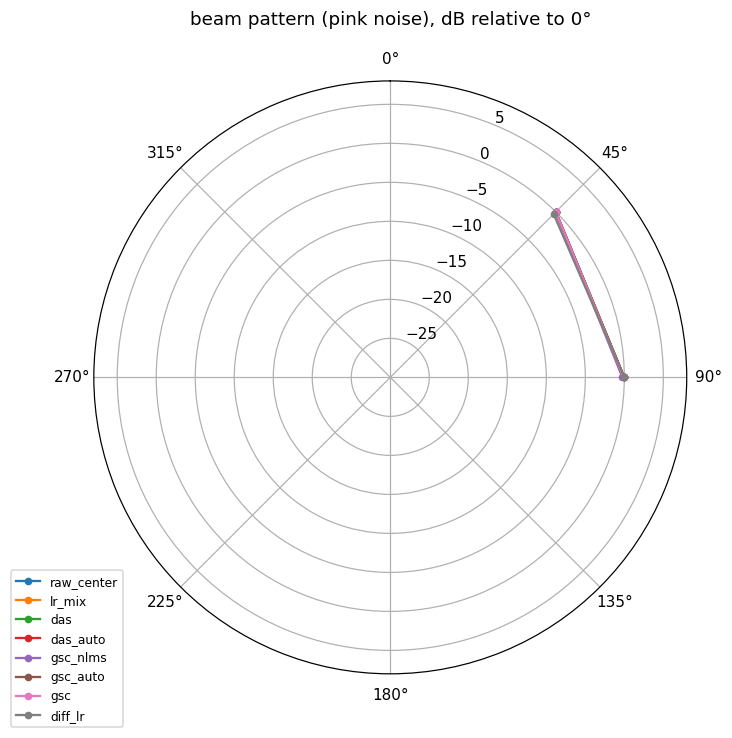
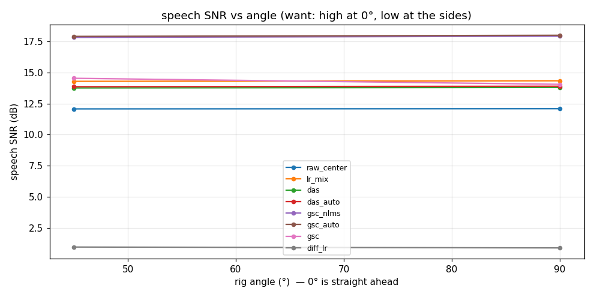
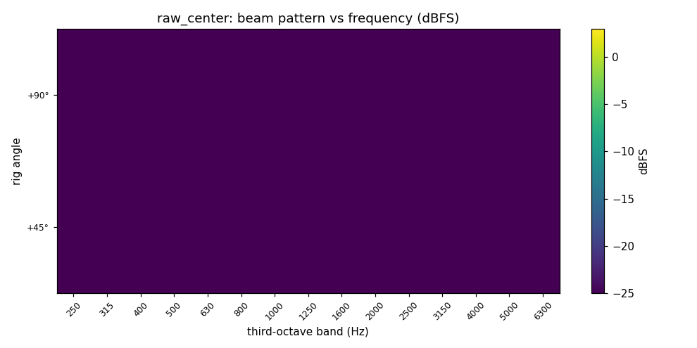
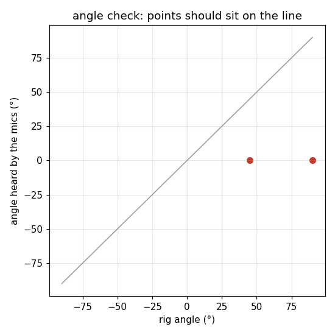

4 tests. Angles: [45, 90]. Distances: [60]. Environments: ['quiet'].
Best so far: raw_center (score None). See the scoring notes at the bottom.
| path | score | side_rejection | di_estimate | snr_front | snr_side_mean | front_level | angles |
|---|---|---|---|---|---|---|---|
| raw_center | 12.08 | 2 | |||||
| raw_left | 12.08 | 2 | |||||
| raw_right | 12.08 | 2 | |||||
| lr_mix | 14.32 | 2 | |||||
| das | 13.78 | 2 | |||||
| das_c1 | 13.88 | 2 | |||||
| das_c2 | 13.97 | 2 | |||||
| das_auto | 13.88 | 2 | |||||
| gsc_nlms | 17.88 | 2 | |||||
| gsc_auto | 17.96 | 2 | |||||
| gsc | 14.3 | 2 | |||||
| diff_lr | 0.92 | 2 |




| run | angle | dist | env | heard at | warnings |
|---|---|---|---|---|---|
| 2026-10-27_132820_angle045_distance060cm_quiet_rep1 | 45 | 60 | quiet | +0° | microphones hear the source at +0 deg but the rig says +45 deg: check the angle marking, the slot order (left/right swapped?) and --spacing-mm |
| 2026-10-27_132832_angle090_distance060cm_quiet_rep1 | 90 | 60 | quiet | +0° | microphones hear the source at +0 deg but the rig says +90 deg: check the angle marking, the slot order (left/right swapped?) and --spacing-mm |
| 2026-10-27_132856_angle045_distance060cm_quiet_rep2 | 45 | 60 | quiet | +0° | microphones hear the source at +0 deg but the rig says +45 deg: check the angle marking, the slot order (left/right swapped?) and --spacing-mm |
| 2026-10-27_132914_angle090_distance060cm_quiet_rep2 | 90 | 60 | quiet | +0° | microphones hear the source at +0 deg but the rig says +90 deg: check the angle marking, the slot order (left/right swapped?) and --spacing-mm |
(all dB, computed on the same recordings):
front_level noise level at 0°
side_rejection front level minus the mean level at |angle| >= 45° (higher is better)
di_estimate directivity index from the polar (higher is better)
snr_front speech SNR at 0° (higher is better)
snr_side_mean mean speech SNR at |angle| >= 45° (LOWER is better:
a talker at the side
should not get through)
score side_rejection + (snr_front - snr_side_mean)